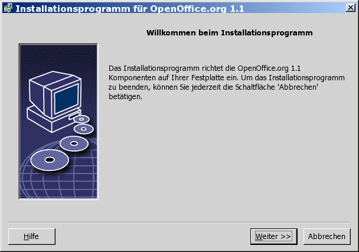
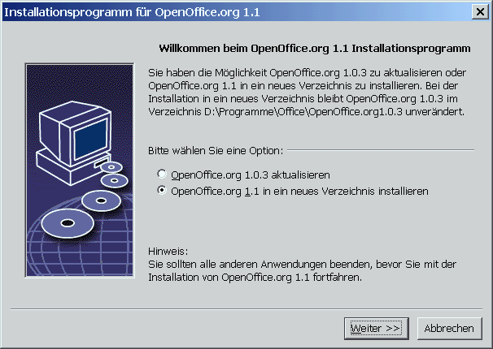
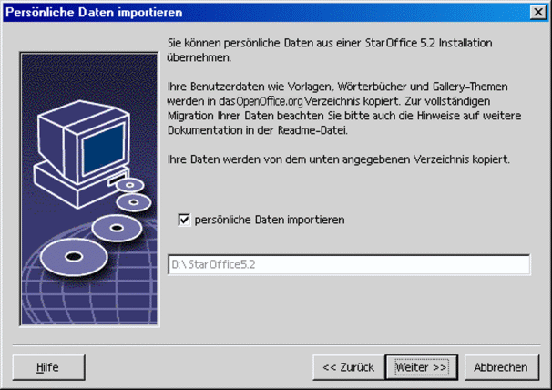
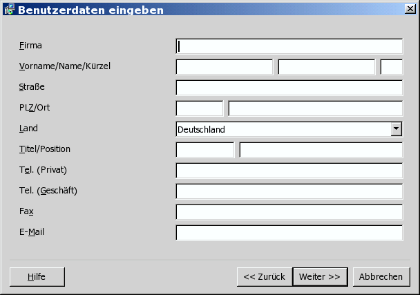
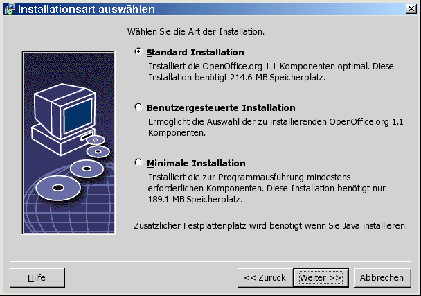
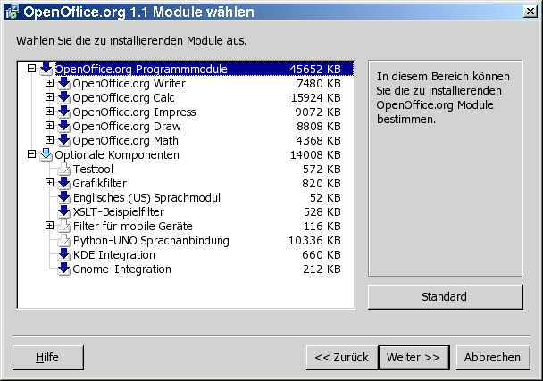
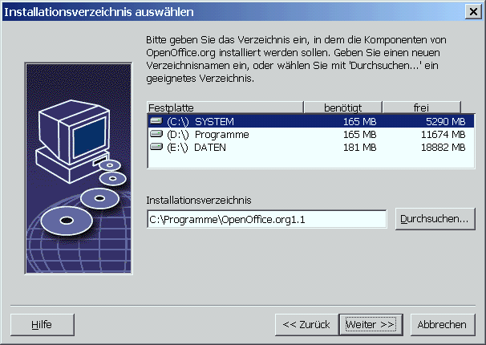
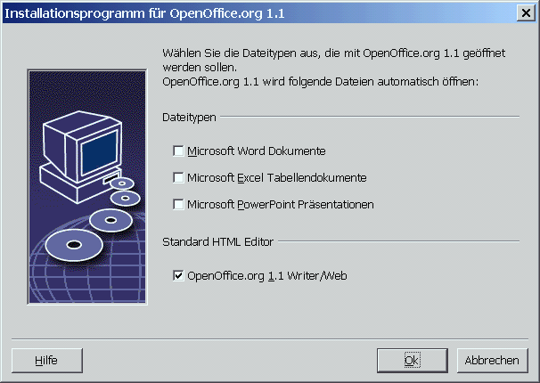
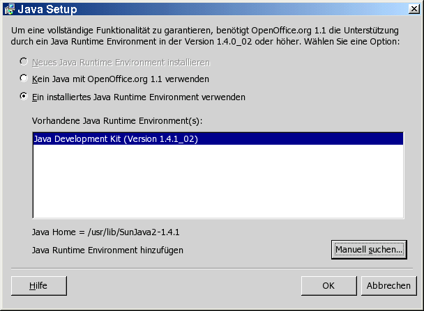

| << zurück | Inhalt | weiter >> |
3 Einzelbenutzer-Installation
Die
Einzelbenutzerinstallation installiert
Für die
Einzelbenutzerinstallation melden Sie sich in Ihrem System als
normaler Benutzer an und installieren
|
|
Sie können den Installationvorgang jederzeit durch Klicken auf die Schaltfläche Abbrechen im Installationsdialog stoppen. Hier besteht auch die Möglichkeit, das angelegte Installationsverzeichnis wieder zu löschen. Wenn Sie das tun, werden alle Dateien und Unterordner gelöscht. |
Installationsvoraussetzungen
Je nach den gewählten Optionen benötigt die Einzelbenutzerinstallation zwischen 190 und 250 MB freien Speicherplatz auf der Festplatte. Während der Installation werden auf Windows-Rechnern 40 MB und auf UNIX®-Plattformen 80 MB zusätzlich für temporäre Dateien benötigt.
Auf Rechnern, auf
denen bereits eine Version von
.sversionrc (UNIX-Systeme)
sversion.ini (Windows-Systeme).
Bei für mehrere Benutzer konfigurierten Windows NT/2000- und Win9x-Betriebssystemen befindet sich die Datei sversion.ini im Verzeichnis
"C:\Dokumente und Einstellungen\{Benutzername}\Anwendungsdaten".
Diese Dateien zeigen
den Pfad und die Version des bereits installierten Programmpakets
Installation starten
Installation auf UNIX-Plattformen
Melden Sie sich mit Ihrem Benutzernamen an (für eine Einzelbenutzerinstallation sind keine Systemadministratorrechte erforderlich).
Wechseln Sie in die grafische XWindow-Oberfläche.
Wechseln Sie in das Verzeichnis, in welches Sie zuvor die Installationsdateien entpackt haben.
Starten Sie das Installationsprogramm mit einem Klick auf die Datei:setup
- Alternativ können Sie eine Terminalemulation öffnen, mit dem Befehl cd in das Installationsverzeichnis gehen und von dort aus die Installation über den Befehl ./setup anstossen.
Installation auf Windows-Plattformen
Melden Sie sich erforderlichenfalls mit Ihrem Benutzernamen an (für eine Einzelbenutzerinstallation sind keine Systemadministratorrechte erforderlich).
Wechseln Sie in das Verzeichnis, in welches Sie zuvor die Installationsdateien entpackt haben.
Wählen Sie eine der folgenden Vorgehensweisen:
Doppelklicken Sie das Installationsprogramm setup.exe
Öffnen Sie das Windows-Menü Start, wählen Sie Ausführen und geben Sie in das Feld Öffnen X:\{Downloadverzeichnis}\setup.exe ein.
X steht für den Buchstaben des Laufwerks und {Downloadverzeichnis} für das Verzeichnis, in welches sie die Installationsdateien entpackt haben.
Klicken Sie auf OK zum Starten der Installation.
Installationsverlauf
Klicken Sie während der Installation auf die Schaltfläche Hilfe, um Informationen zum aktuellen Dialog anzuzeigen, und klicken Sie dann auf die Schaltfläche Zurück, um zum Installationsprogramm zurückzukehren. Schließen Sie das Hilfefenster NICHT mit der Schaltfläche "X" rechts oben, da dies das Installationsprogramm beenden würde.
Begrüßung
Das erste Fenster, das nach dem Starten des Installationsprogramms angezeigt wird, ist der Willkommen-Dialog.
-

Klicken Sie auf Weiter.
-

Wenn das
Installationsprogramm eine frühere StarOffice-
(5.2 oder höher) oder
Wählen Sie eine Installationsoption und klicken Sie auf Weiter.
Wichtige Hinweise
Die Datei Readme wird in einem Fenster angezeigt. Die Readme-Datei befindet sich im Installationsverzeichnis Ihres Rechners, damit Sie sie später noch einmal lesen können.
Lesen Sie die Informationen und klicken Sie auf Weiter.
Lizenzvereinbarung
Der nächste
Dialog enthält die Lizenzvereinbarung. Wenn Sie die Vereinbarung
nicht akzeptieren, wird
Lesen Sie die Lizenzvereinbarung durch. Wenn Sie damit einverstanden sind, stellen Sie sicher, dass Sie die Vereinbarung bis ans Ende durchlaufen haben, wählen Sie die Option Ich akzeptiere die Bedingungen der Vereinbarung und klicken Sie auf OK.
Wenn Sie nicht damit einverstanden sind, klicken Sie auf Ablehnen, um das Installationsprogramm zu beenden.
Migration
Wenn StarOffice 5.2 auf Ihrem Rechner installiert ist, wird ein Migrationsdialog angezeigt, der Ihnen ermöglicht, persönliche Daten in die neue Installation zu importieren. Dieser Dialog wird nicht angezeigt, wenn Sie die Option Aktualisierung der Installation gewählt haben.
-

Wenn Sie Ihre persönlichen Daten übernehmen möchten, markieren Sie das Markierfeld persönliche Daten importieren.
Klicken Sie auf Weiter, um mit der Installation fortzufahren.
Benutzerdaten
Wenn Sie die persönlichen Daten nicht importieren, wird der Dialog Benutzerdaten eingeben angezeigt.
Die hier eingegebenen
Daten werden von
Sie können auf
diesen Dialog auch später in jeder
-

Geben Sie Ihre persönlichen Daten ein.
Klicken Sie Weiter zum Fortsetzen der Installation.
Installationsart
Verwenden Sie diesen
Dialog, um die Installationsart zu wählen, die Sie ausführen
möchten. Dieser Dialog wird nicht angezeigt, wenn Sie eine
frühere Version von
Der angegebene Speicherplatzbedarf ist lediglich ungefähr und hängt von den Eigenschaften der Speichermedien ab.
Drei Installationsarten stehen zur Verfügung:
Standard Installation - empfohlen für die meisten Benutzer. Installiert alle
OpenOffice.org -Anwendungen und eine Auswahl von Filtern.Benutzergesteuerte Installation - empfohlen für fortgeschrittene Benutzer. Sie ermöglicht Ihnen, die zu installierenden Komponenten einzeln auszuwählen.
Minimale Installation - empfohlen für Benutzer mit eingeschränktem Speicherplatz. Diese Option installiert nur die Komponenten, die erforderlich sind, um
OpenOffice.org auszuführen.
-

Wählen Sie die Installationsart, die Sie ausführen möchten.
Klicken Sie auf Weiter zum Fortsetzen der Installation.
Komponentenauswahl
Wenn Sie die Option Benutzergesteuerte Installation wählen, können Sie die Module und Komponenten auswählen, die Sie installieren möchten.
Klicken Sie auf das Pluszeichen (+) neben dem Namen eines Moduls oder einer Komponentenkategorie, um die Liste aufzuklappen. Klicken Sie auf die Kategorie oder die Komponente, die Sie installieren möchten. Wenn in einer Kategorie nicht alle Komponenten ausgewählt wurden, ist das Feld vor der Kategorie halbtransparent.
-
Kategorien in dunkelblau werden mit allen Komponenten installiert.
Kategorien in hellblau werden nur mit einigen ihrer Komponenten installiert.
Kategorien in weiß werden nicht installiert.
Zum Wiederherstellen der Standardinstallationsoptionen klicken Sie auf die Schaltfläche Standard.
-

Wählen Sie die gewünschten Module und Komponenten für die Installation aus.
Klicken Sie auf Weiter zum Fortsetzen der Installation.
Installationsverzeichnis
Im nächsten Dialog können Sie das Installationsverzeichnis wählen. Dieser Dialog wird bei einer Aktualisierungsinstallation nicht angezeigt.
In diesem Dialog werden die in Ihrem System verfügbaren Laufwerke angezeigt. Der angegebene Speicherplatzbedarf ist lediglich ungefähr und hängt von den Eigenschaften der Speichermedien ab.
-

Geben Sie einen Pfad für das Installationsverzeichnis in das Textfeld ein oder klicken Sie auf Durchsuchen, um ein Verzeichnis auszuwählen.
Wenn das Verzeichnis nicht existiert, werden Sie aufgefordert, es anzulegen.
Klicken Sie Weiter zum Fortsetzen der Installation.
Überprüfen der Installationsoptionen
Nach Einstellen der Installationsoptionen wird ein Dialog angezeigt, der Ihnen ermöglicht, Ihre Einstellungen zu überprüfen.
Klicken Sie auf Installieren, um mit der Installation fortzufahren, oder klicken Sie auf Zurück, um die vorgenommenen Einstellungen zu ändern.
Zuordnung der Dateitypen
Verwenden Sie diesen
Dialog, um
-

Wählen Sie die Dateitypen, die
OpenOffice.org öffnen soll.Damit
OpenOffice.org Writer der Standardeditor für HTML-Dateien wird, markieren Sie das Markierfeld Standard HTML Editor.Klicken Sie auf OK
|
|
Sie können die Dateitypzuordnungen einer bestehenden Installation ändern, indem Sie das Installationsprogramm ausführen und die Option Modifizieren wählen (siehe Modifizieren auf Seite 62). |
Java™ Runtime Environment-Installation
Der nächste Dialog listet die Versionen der Java™-Laufzeitumgebung (JRE) auf, die in Ihrem System installiert sind.Wählen Sie die JRE, die Sie verwenden möchten. Empfohlen wird Version 1.4 oder höher.
-

Wenn in Ihrem System bereits eine JRE vorhanden ist, wählen Sie die Version, die Sie verwenden möchten, und klicken dann auf OK.
Start des Kopiervorgangs
Während der Installation werden der Arbeitsfortschritt in Prozent und die geschätzte Restzeit angezeigt.
Abschluß der Installation
Wenn die Installation fertig ist, wird ein abschließender Dialog angezeigt.
Klicken Sie auf Fertig zum Beenden der Installation.
|
|
Je nach dem verwendeten Window Manager müssen Sie sich möglicherweise abmelden und Ihren Window Manager neu starten, um die einzelnen Module von OpenOffice.org über die Menüs Ihrer bevorzugten Desktopumgebung zur Verfügung zu haben. |
OpenOffice.org
starten
|
|
Wechseln Sie in
das Verzeichnis {installpath}/program
oder das lokale ./soffice Sie können
auch das Verzeichnis {installpath}/program
zum Programmpfad hinzufügen und dann in irgendeinem
Verzeichnis "soffice" eingeben, um Zum Einrichten
des Standarddruckers für Nach Abschluss des Installationsvorgangs unter Solaris OE melden Sie sich ab und dann wieder an, um die CDE-Integration zu aktualisieren. |
|
|
Die Symbole zum
Starten der Während des
Installationsvorgangs wird eine Verknüpfung zum Klicken Sie mit
der rechten Maustaste auf das Schnellstarter-Symbol im
Systembereich und wählen Sie die Näheres zum Schnellstarter finden Sie in der Online-Hilfe. |
Informationen zum
Starten von
| << zurück | Seitenanfang | weiter >> |
| (Allgemeine Installationsinformation) | (Mehrbenutzer- und Netzwerkinstallation) |